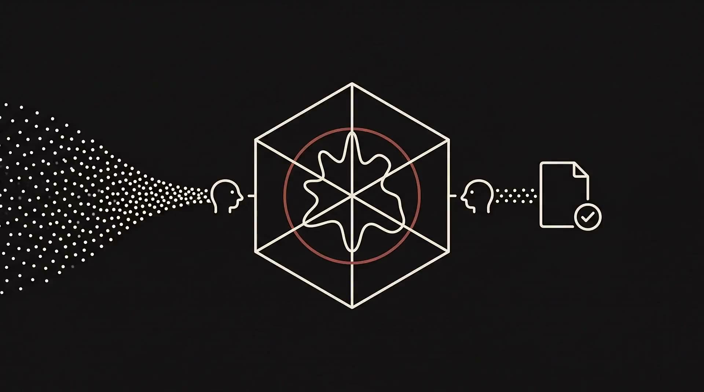

Scores a draft against a voice, and blocks what misses.voice-os
Most "sounds like me" tooling is a prompt and a few examples. voice-os is a measured system. It ingests a writing corpus with full provenance, mines how a voice actually behaves across contexts, drafts through a generative and an adversarial persona, and scores the result on six stylistic axes against a threshold calibrated to what the author's own writing scores.
Below the bar it revises, or it refuses. "Sounds like me" stops being a vibe and becomes a spec. The engine began as the executive voice system I built at Google, a digital twin calibrated on 6.9M+ words of a VP's communications; this is its personal successor.
read the narration
I'm Mitchell Williams, and voice-os is my measured voice operating system. Most tools that claim to sound like you are just a prompt and a few examples, with no way to tell a near miss from a real match. Mine is different. It ingests a writing corpus with full provenance, mines how my voice actually behaves across contexts, then drafts through a generative persona and an adversarial persona that stress-tests the result. It scores every draft on six axes, rhetorical pace, risk tolerance, sentence rhythm, escalation pattern, hedging behavior, and editorial register, against a threshold calibrated to what my own writing actually scores. Below that bar, it revises, or it refuses to ship. The engine began as an executive voice system I built at Google, a digital twin calibrated on almost seven million words of a VP's communications. This is its personal successor. "Sounds like me" stops being a vibe and becomes a spec.

A queryable voice model plus a drafting loop that will not ship a draft the model does not recognize. Every run is checkpointed and stamped with the corpus, artifact, and model that produced it, so a result is auditable, not vibed.
Provenance. The engine began as an executive "Voice DNA" pipeline I built at Google, a digital twin that drafted high-stakes communications for a VP in that leader's own voice, calibrated on 6.9M+ words. This repository is the personal successor: the same architecture, recalibrated and extended on my own corpus of 143,000+ provenance-tagged chunks across 13 source types, from sent email and messages to broadcast scripts, program charters, and on-camera transcripts with pacing signals.
The six axes catch what vibes miss. Voice is not one dial. voice-os scores rhetorical pace, risk tolerance, sentence rhythm, escalation pattern, hedging behavior, and editorial register separately, so a draft that is technically fluent but too hedged, or too formal for the context, gets caught instead of waved through. Register is contextual: the target shifts by channel and audience, mined from how the author actually writes in each.
A drafting loop, not a single shot. Drafts route through a LangGraph state machine. A generative persona writes with real exemplars of the author's own messages retrieved in context. An adversarial persona stress-tests the result. A QA gate then decides pass, revise, or reject, and the banned layer combines a curated refusal list with anti-patterns mined statistically from the corpus, so the tics the author never uses stay out.
Measured, not asserted. The evaluation harness drafts real held-out messages through the full pipeline and scores generated against real, so a change to the model is measured rather than felt. The gate's thresholds are themselves calibrated per context to percentiles of what the author's real text scores. There is a deterministic offline mode for reproducible runs, and the method and a sample corpus are public in the repo.
Everything below comes from a single logged run on 2026-07-12 (run id capstone-voiceos-demo-20260712c), shown in full rather than summarized. Context: a document for an external audience, high stakes, goal inform. The mined gate threshold for that context: 0.650. The system retrieved three real exemplars from the corpus (two broadcast transcripts, one internal presentation), fused seven knowledge-base patterns and five mined patterns into guidance, and flagged two measured register drifts it should correct for. Then it drafted.
The adversarial critique that forced the revision, quoted from the run log: "hedging_behavior 0.04 requires near-total certainty, but 'could be useful' and 'that need to produce videos quickly' are exactly the soft qualifiers a 0.04 voice would never allow", and "the ending deflates rather than builds; it trails off weaker than it started." The revision deleted the hedge, staked the claim, and rebuilt the close. Risk tolerance is what moved the gate.
The counterexample matters as much as the pass. The same day, a deliberately hype-flavored draft ("game-changing", "revolutionizing", "stay tuned") went through the same loop in a LinkedIn context: four revisions, fidelity peaked at 0.669, and the gate returned reject. It would not ship. A voice gate that only ever says yes is a rubber stamp; this one declines work that misses, and logs why.
The interesting problem in AI-assisted writing is not generating text, it is keeping the writer's judgment in the loop while the machine does the heavy lifting. voice-os is my answer to that: it lets AI accelerate a draft while a measured gate protects the voice, and it refuses to pretend a near miss is a match. It is the same instinct I bring to every AI tool I build, more velocity and more quality without taking my hand off the wheel.
The taste stays human. The measurement makes "sounds like me" a spec the machine can actually be held to, instead of a vibe it is trusted to approximate.
Against the Forward Deployed Creative posting, this page is evidence of: "reference content and prototypes that set the standard", a quality bar expressed as numbers a customer can hold their own runs to; "best practices", pass, revise, and reject as explicit logged decisions rather than opinions; "educate and train customer teams", a gate whose reasoning is visible is a gate you can teach; and brand-voice governance, the exact discipline an enterprise asks for before it lets generation near its name.
The method, the six-axis scorer, and a sample corpus are public at github.com/mitwilli-create/voice-os.